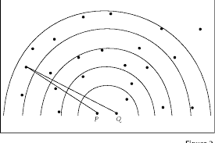

Combinatorics
Seminar Fall 2021/Spring 2022

The combinatorics group at the University of Rochester
consists of Alex Iosevich and Jonathan Pakianathan. Several
other faculty members are interested in the subject matter and
attend the seminar. The seminar will generally meet on
Thursdays at 5 p.m. EST, though adjustments will be made when
necessary, especially for zoom talks involving large time zone
differences. When the seminar meets in person, it will take
place in Hylan 1106A, on the 11th floor of the Hylan Building
at the University of Rochester.
Thursday, September 2
Speaker: Amanda Montejano, National Autonomous
University of Mexico (video)
Time: 5 p.m. EST
Zoom: 573 239 4086
Title: Zero-sum squares in bounded discrepancy
{-1,1}-matrices
Abstract: .pdf
Thursday, September 9
Speaker: Hazel Brenner, Cornell University (video)
Time: 5 p.m. EST
Location: Hylan 1106
Title: Optimal point sets determining few distinct
triangles
Abstract: .pdf
Thursday, September 16
Speaker: Izabella Laba, University of British Columbia
(video)
Time: 3.30 p.m. EST
Zoom: 573 239 4086
Title: Tiling the integers with translates of one tile
Abstract: .pdf
Thursday, September 23
Speaker: Itay Londner, University of British Columbia (video)
Time: Noon EST (12 p.m.)
Zoom: 573 239 4086
Title: Combinatorial
methods for integer tiling (.pdf)
Abstract: .pdf
Thursday, September 30
Speaker: Chaya Keller, Ariel University (video)
Time: 3.30 p.m. EST
Zoom: 573 239 4086
Title: On multi-color Ramsey numbers and subset
coloring of hyper-graphs.
Abstract: .png
Thursday, October 7
Speaker: Shira Zerbib, Iowa State University (video)
Time: 5 p.m. EST
Zoom: 573 239 4086 (this is a zoom talk).
Title: Line transversals in families of
connected sets in the plane (link to the paper)
Abstract: We prove that if a family of compact
connected sets in the plane has the property that every
three members of it are intersected by a line, then there
are three lines intersecting all the sets in the family.
This answers a question of Eckhoff from 1993, who proved
that, under the same condition, there are four lines
intersecting all the sets. We also prove a colorful version of
this result, under weakened conditions on the sets, improving
results of Holmsen from 2013. Our proofs use the
topological KKM theorem. Joint with Daniel McGinnis.
Thursday, October 21
Speaker: Miklos Bona, University of Florida
Time: 5.00 p.m. EST
Location: Hylan 1106A (in person talk)
Title: Negative results in enumerative
combinatorics
Abstract: .pdf
Thursday, October 28
Speaker: Zuzana Patakova, Charles University (video)
Time: 1 p.m. EST
Zoom: 573 239 5086
Title: On Radon and fractional
Helly theorems
Abstract: Radon theorem plays a basic role in many results
of combinatorial
convexity. It says that any set of d+2 points in R^d can be
split into
two parts so that their convex hulls intersect. It implies
Helly theorem
and as shown recently also its more robust version,
so-called fractional
Helly theorem. By standard techniques this consequently
yields an
existence of weak epsilon nets and a (p,q)-theorem.
We will show that we can obtain these results even without
assuming
convexity, replacing it with very weak topological
conditions. More
precisely, given an intersection-closed family F of subsets
of R^d, we
will measure the complexity of F by the supremum of the
first d/2 Betti
numbers over all elements of F. We show that bounded
complexity of F
guarantees versions of all the results mentioned above.
Partially based on joint work with Xavier Goaoc and Andreas
Holmsen.
Thursday, November 18
Speaker: Rachel Greenfeld
Zoom: 573 239 4086
Time: 5 p.m. EST
Title: Decidability and periodicity of translational
tilings
Abstract: Let G be a finitely generated abelian
group, and F_1,...,F_J be finite subsets of G.
We say that F_1,...,F_J tile G by translations, if G
can be partitioned into translated copies of
F_1,...,F_J. Given some finite sets F_1,...,F_J in G,
can we decide whether they admit a tiling of G?
Suppose that they do tile G, do they admit any periodic
tiling? A well known argument of Hao Wang ('61), shows
that these two questions are closely related. In the talk,
we will discuss this relation, and present some results, old
and new, about the decidability and periodicity of
translational tilings, in the case of a single tile (J=1) as
well as in the case of a multi-tileset (J>1). The
talk is based on an ongoing project with Terence Tao.
Friday, November 19
Speaker: Mark Rudelson
Location: Hylan 1106A (in person talk)
Time: 2 p.m. EST
Title: Matching vertices of correlated random graphs
Abstract: Consider two copies of the same graph
with a large number of vertices. In each copy, we
independently delete a few edges. Our aim is to match exactly
the vertices of the first and the second copy. This problem
originates in particular in social networks, where you know
the identities of users in one network and want to recover the
identities in another one. This problem is computationally
hard in a deterministic setting, so it is often considered for
typical, i.e., random graphs. We will discuss a
computationally efficient probabilistic algorithm that allows
an exact recovery with high probability even if one deletes a
small constant proportion of edges.
Joint work with Cheng Mao and Konstantin Tikhomirov.
{kind=link}